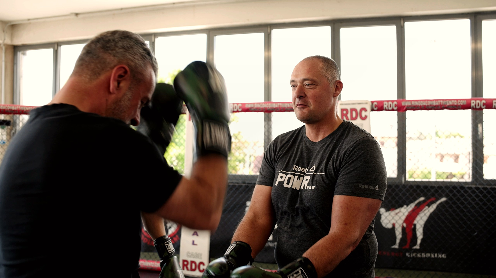

Campione sportivo internazionale
Porta in azienda vissuti autentici di preparazione, fatica, vittorie, sconfitte, pressione e capacità di rialzarsi.
Fondatore BeOx | Campione internazionale | Formatore aziendale
Luca Rigoldi è il fondatore di BeOx: campione internazionale di boxe, formatore aziendale e imprenditore. Ha voluto BeOx per portare nelle aziende una metafora sportiva concreta, capace di allenare resilienza, leadership, gestione della pressione, comunicazione e spirito di squadra.
Chi è Luca Rigoldi
Luca è il punto di origine di BeOx. La sua esperienza sportiva gli ha insegnato che la performance non nasce dal talento isolato, ma da metodo, allenamento, lettura della pressione, capacità di reagire agli errori e fiducia nel lavoro quotidiano.
Negli anni ha trasformato questa esperienza in un linguaggio formativo per aziende, manager e team: non una semplice testimonianza motivazionale, ma un modo diretto per rendere visibili dinamiche che nel lavoro spesso restano implicite.
Porta in azienda vissuti autentici di preparazione, fatica, vittorie, sconfitte, pressione e capacità di rialzarsi.
Ha seguito percorsi di specializzazione in consulenza e formazione nelle aziende, con focus sui team aziendali.
Gestisce una realtà importante nel mondo dello sport a Vicenza, con un team di circa 40 collaboratori.
Perché nasce BeOx
BeOx nasce dalla volontà di Luca di portare nelle organizzazioni ciò che lo sport di alto livello rende evidente: per crescere servono allenamento, feedback, disciplina, gestione dell'errore, capacità di leggere il contesto e fiducia nella squadra.
La boxe, in particolare, è una metafora potente: insegna a restare lucidi sotto pressione, a proteggersi senza chiudersi, a scegliere quando avanzare, quando ascoltare l'angolo e quando trasformare il colpo ricevuto in apprendimento.
Scopri dove può intervenire Luca

Prima leggiamo il bisogno
Prima di scegliere uno speech, un team building o una Sport Academy con Luca, BeOx aiuta HR e manager a leggere segnali e priorità: motivazione, comunicazione, fiducia, leadership, stress, conflitto e collaborazione.
Il metodo
Gli interventi con Luca vengono progettati sul bisogno dell'azienda. Il suo vissuto sportivo diventa una chiave per parlare di comportamenti reali: come comunichiamo, come reagiamo alla pressione, come gestiamo il conflitto, come restiamo squadra quando la situazione si complica.
Si parte da pubblico, obiettivo, dinamiche del team e messaggio da trasferire.
Boxe e sport diventano linguaggio per parlare di pressione, errore, disciplina e obiettivi.
Il vissuto sportivo viene collegato a leadership, comunicazione, ruoli e collaborazione.
Debrief, domande guida e trasferimento operativo aiutano il team a portare a terra l'esperienza.
Dove può intervenire Luca
Il coinvolgimento di Luca può avere intensità diverse: da uno speech ispirazionale progettato su misura fino a percorsi più strutturati, esperienziali e formativi.

Un team building ludico-formativo con la metafora della boxe per lavorare su fiducia, collaborazione, pressione, comunicazione e spirito di squadra.

Interventi per convention, kick-off ed eventi aziendali in cui il racconto sportivo diventa messaggio di crescita, responsabilità e gestione delle sfide.

Academy aziendali su misura in cui Luca e altri campioni possono essere coinvolti su temi come resilienza, conflitto, leadership, pressione e squadra.

Percorsi formativi più strutturati e interattivi su leadership, comunicazione, conflitto, stress, decision making e lavoro di squadra.
Temi allenabili
Lo sport diventa uno specchio semplice e immediato per rileggere comportamenti, abitudini e dinamiche del lavoro quotidiano.
Reagire alle difficoltà, attraversare gli errori e trasformare gli ostacoli in apprendimento.
Restare lucidi quando aumentano aspettative, urgenze e complessità.
Capire quando guidare, quando ascoltare e quando sostenere il lavoro degli altri.
Trasformare lo scontro in confronto utile, senza perdere rispetto e orientamento al risultato.
Collegare costanza, allenamento e metodo alla crescita professionale.
Passare dall'io al noi, riconoscendo ruolo, contributo e impatto sul gruppo.
Quando coinvolgerlo
Il suo intervento è indicato quando serve un racconto capace di catturare l'attenzione e, allo stesso tempo, aprire una riflessione concreta sui comportamenti di team.
Convention, kick-off e meeting in cui serve energia e direzione.
Team building su fiducia, comunicazione, collaborazione e pressione.
Percorsi di Sport Academy su resilienza, conflitto, leadership e performance.
Formazione per manager, team commerciali, reparti e prime linee.
Momenti di cambiamento in cui il team deve ritrovare motivazione e senso comune.
Alcune delle realtà con cui collaboriamo per formazione aziendale, team building, eventi, percorsi sportivi e sviluppo dei team.


FAQ
Luca Rigoldi è il fondatore di BeOx, campione internazionale di boxe, formatore aziendale e imprenditore nel mondo dello sport. Con BeOx porta nelle aziende la metafora sportiva per lavorare su team, leadership, resilienza, pressione e performance.
Perché la boxe rende concreti temi molto presenti anche in azienda: gestione della pressione, lucidità, rispetto, controllo, errore, disciplina, ascolto dell'angolo, resilienza e capacità di ripartire dopo una difficoltà.
Sì. Luca può intervenire in convention, kick-off, eventi HR, sales meeting e percorsi interni con speech progettati su misura per collegare esperienza sportiva, mindset, performance e bisogni dell'azienda.
Sì. Lo sport viene usato come metafora, non come prova atletica. I concetti vengono tradotti in chiave aziendale e possono parlare a manager, team commerciali, reparti, prime linee e popolazione aziendale.
Può essere coinvolto in team building con metafora della boxe, speech aziendali, Sport Academy, formazione aziendale con metafora sportiva e percorsi dedicati a resilienza, pressione, conflitto, leadership e spirito di squadra.
Sì. BeOx progetta interventi e percorsi aziendali in tutta Italia, con maggiore operatività nelle regioni del Nord e Centro Italia, fino al Lazio, e con progetti selezionati anche in Campania.
Il valore non sta solo nella carriera sportiva. Luca usa il proprio vissuto da campione, formatore e imprenditore per aiutare le aziende a leggere comportamenti, dinamiche di team e sfide organizzative in modo concreto.
Contatti
Raccontaci obiettivo, pubblico, data indicativa e contesto aziendale. Ti aiuteremo a capire se costruire uno speech, un team building, una Sport Academy o un percorso formativo con metafora sportiva.